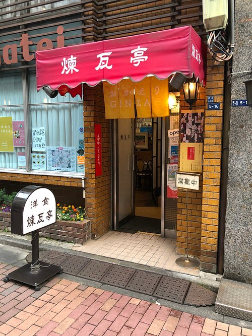
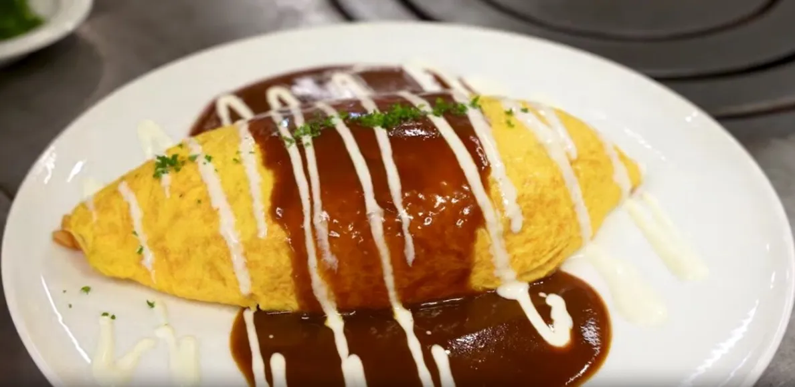

O Início em Tóquio
O Omurice surgiu pela primeira vez em um restaurante ocidental chamado "Rengatei" no bairro de Ginza, em Tóquio. Inspirado na culinária europeia, o chef criou uma versão japonesa do omelete recheado com arroz.

O Omurice surgiu pela primeira vez em um restaurante ocidental chamado "Rengatei" no bairro de Ginza, em Tóquio. Inspirado na culinária europeia, o chef criou uma versão japonesa do omelete recheado com arroz.

Após a Segunda Guerra Mundial, o Omurice se tornou popular como um prato caseiro acessível. Donas de casa japonesas começaram a criar suas próprias variações.
Hoje, o Omurice é um ícone da cultura pop japonesa, aparecendo em animes e sendo servido em cafés temáticos.
